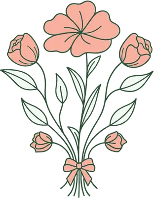

Ramos Silvestres
Diseños naturales, delicados y llenos de encanto
Cada ramo es único y se arma según la disponibilidad de flores, manteniendo siempre una composición armónica y especial.

Florería · Castro, ChiloéFlower shop · Castro, Chiloé
Silvestre. Elegante. Es Floresta.


Diseño floral silvestre
Nuestros diseños tienen un estilo único: más natural, más libre, más sureño. Nada producido en serie, nada que parezca de catálogo.
Aquí todo florece con carácter, con texturas del campo, con belleza verdadera.
Mientras más silvestre… ¡mejor!
Esmeralda 198 · Castro


“…las flores son como la naturaleza: nunca son idénticas. Podemos inspirarnos en un diseño, mantener su esencia y estilo, pero cada ramo será siempre único y especial.”
Un ratito en la florería hoy…
Cada ramo que sale de nuestra florería comienza mucho antes de elegir las flores. Comienza con una idea, con una historia y con la intención de emocionar a quien lo recibe.
Entre flores, cintas y muchos detalles… así transcurren nuestros días en Floresta.
Almácigos Chiloé · Pidpid
Almácigos Chiloé ya no es solo un vivero de plantas… ¡ahora también somos flores, diseño y emociones!
Hoy cosechamos estos maravillosos Helleborus desde el jardín de nuestro vivero.
La florería ahora también es un punto de venta y entrega de plantitas de nuestro amado vivero.
En el corazón del campo, en Pidpid · @almacigoschiloe


RamosBouquets
De esas que tienen aroma, textura, movimiento y vida.
Diseños naturales, delicados y llenos de encanto
Cada ramo es único y se arma según la disponibilidad de flores, manteniendo siempre una composición armónica y especial.
Un clásico lleno de significado
Cada ramo es preparado a mano, cuidando cada detalle para lograr un diseño elegante, delicado y lleno de intención.

Un clásico luminoso…
Cada ramo es preparado a mano, cuidando cada detalle para lograr un diseño armonioso, cálido y lleno de vida.

Una combinación luminosa y especial
Cada ramo es preparado a mano, combinando colores y texturas para crear un arreglo armonioso, cálido y lleno de vida.

No necesitas reserva
desde $5.000
Podrás encontrar opciones desde $5.000 en adelante, con flores frescas y diseños pensados para emocionar, acompañar…
Esmeralda 198, Castro
Cómo llegarDirections
Precios del catálogo 2026Prices from the 2026 catalogue


“Una corona floral no es solo un gesto; es una forma de acompañar, honrar y expresar lo que muchas veces las palabras no alcanzan a decir.”
…con diseños únicos y alternativas pensadas para cada necesidad y presupuesto.

Natalia Torres Manzo · @natiiitm
“Mi destino siempre fueron las plantas y las flores!”
“Ha sido, lejos, una de las decisiones más lindas y valientes que he tomado.”
“Porque la vida pasa rápido… demasiado rápido como para no atreverse a hacer lo que uno ama, lo que te mueve, lo que de verdad llena el alma.”

Cariños para todos!

Aunque estemos en pleno invierno en Chiloé, para nosotros todos los días son primavera.
Nosotros seguiremos poniendo un poquito de primavera en cada ramo que preparamos.
5,0
En Google · 6 reseñasOn Google · 6 reviews
“Fantásticas, empáticas y amorosas !!! Y las flores bellas !!!”
“Me encantó el lugar. Hermoso y bien decorado. Los mejores ramos de la ciudad de castro y además en un lugar cómodo y céntrico”
Pide o cotiza tu ramo por WhatsApp

Aún no agregas ramos.You haven't added any bouquets yet.
Total referencialEstimated total
Cada ramo, un detalle que enamora